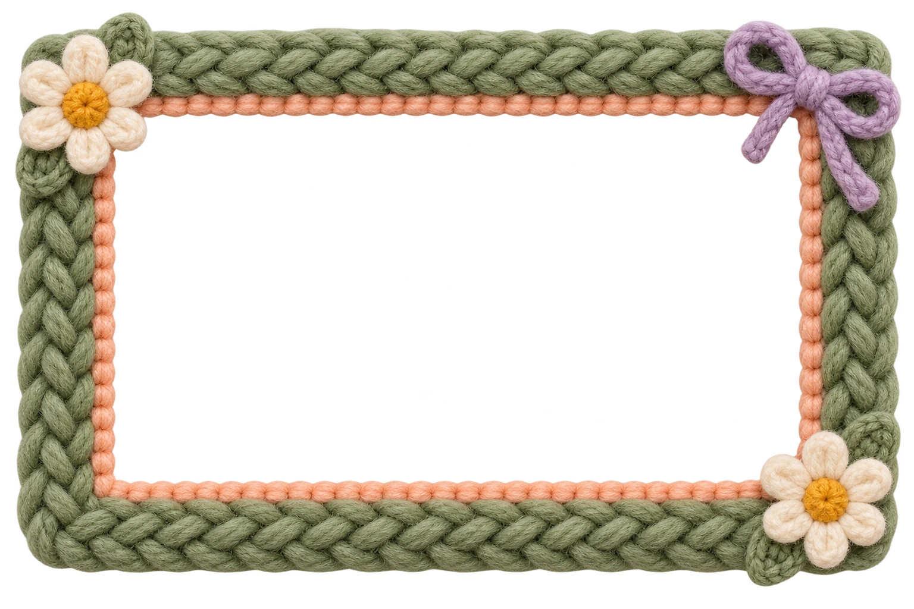

EXPÉRIENCE N° 25 — FRACTURE
Un peu de fracture.
Beaucoup de douceur.
Un souvenir, huit façons de le réinventer.
Déposez un souvenir. Défaites-le. Jouez avec.
Des images à défaire, des fils à retisser.
● LE NÉGATOSCOPE À SOUVENIRS— éclats

JARDIN EN SUSPENSIONVUE 3D
ATTRAPEZ LE TABLEAU, FAITES-LE TOURNER
✳ Manipuler avec curiositéIMAGE LOCALE · RIEN N’EST ENVOYÉ
ET SI ON ESSAYAIT AUTRE CHOSE ?
Votre image reste sur votre appareil. Votre imagination peut partir loin.